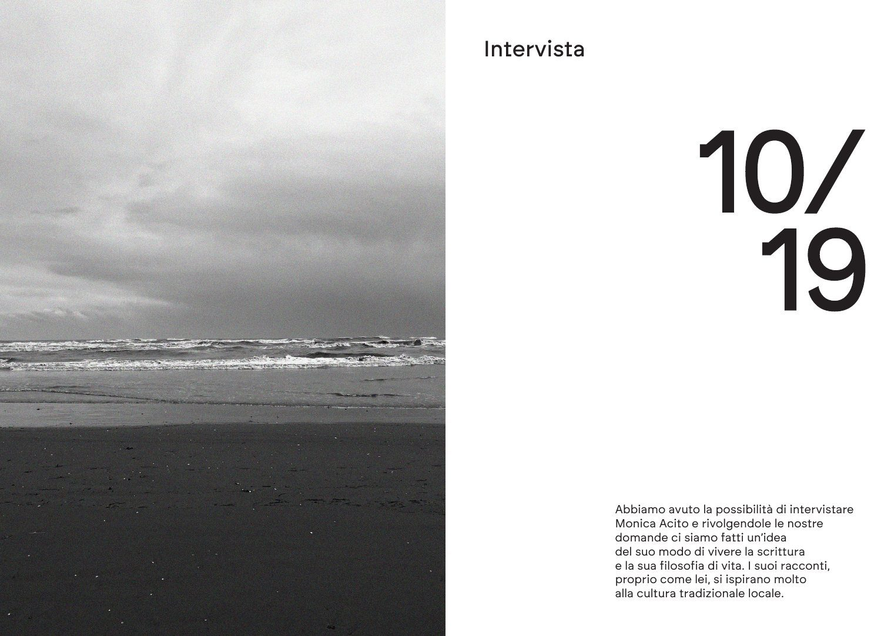
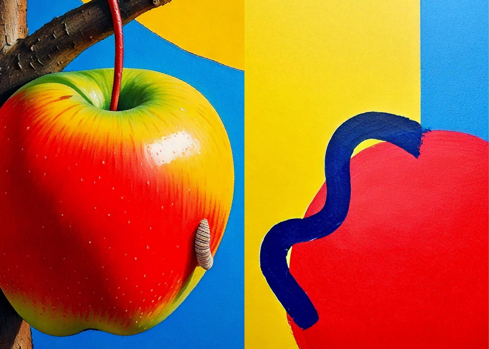
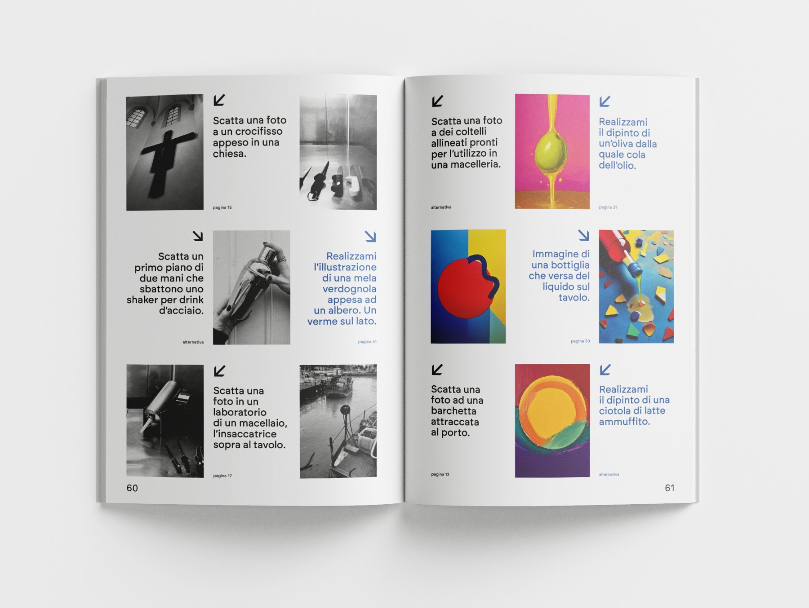
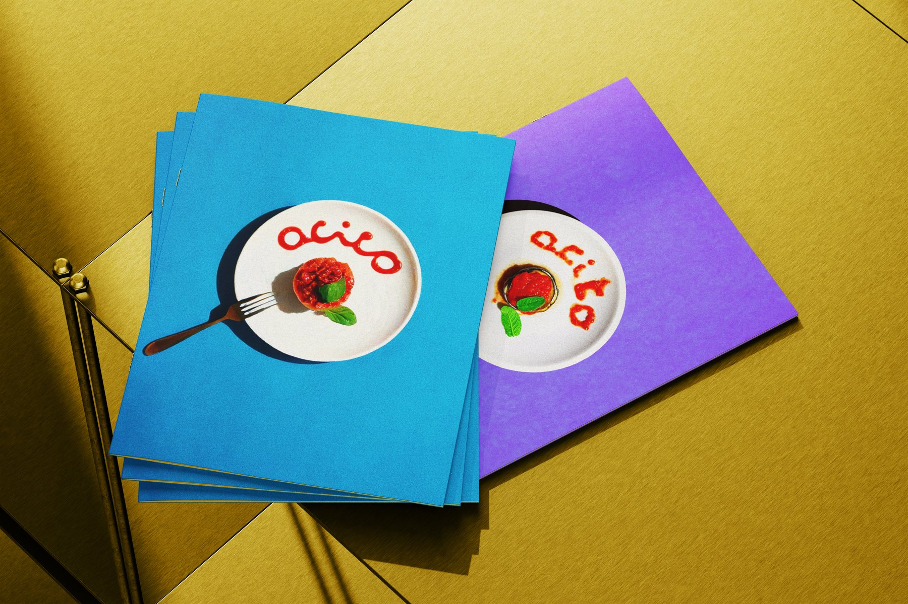

Monica Acito: un racconto e un punto di vista
Una rivista dedicata a Monica Acito e al suo universo narrativo, realizzata insieme a due amici. Ci siamo occupati di scrittura, fotografia e impaginazione.
Progetto universitario · UniRSM 2025 · Rivista, 68 pagine
Concept
La rivista si sviluppa attraverso quattro sezioni: il percorso personale e letterario dell'autrice, un'intervista, il racconto Grazia e una sezione che mette a confronto fotografie realizzate da noi e immagini generate con l'intelligenza artificiale.

Metodo
La parte biografica e l'intervista sono accompagnate da fotografie in bianco e nero realizzate da noi. Per Grazia, un racconto dalle atmosfere cupe, abbiamo scelto immagini a colori generate con l'intelligenza artificiale, creando un contrasto visivo con il testo. Nella sezione dedicata al confronto tra fotografia e AI, le immagini realizzate da noi si alternano a quelle generate, mettendo in dialogo due linguaggi visivi differenti. Anche la copertina riprende questo gioco: una parmigiana di melanzane con la scritta «Acito» diventa protagonista di due versioni, una generata con l'AI e l'altra cucinata e fotografata da noi.




Crediti
Fotografie, intervista e impaginazione di Marco Bruni, Riccardo Giordani ed Emma Simoncelli. Laboratorio di comunicazione 3, UniRSM, A.A. 2024-2025, prof.ssa Lucia Roscini con Sara Guazzarini.